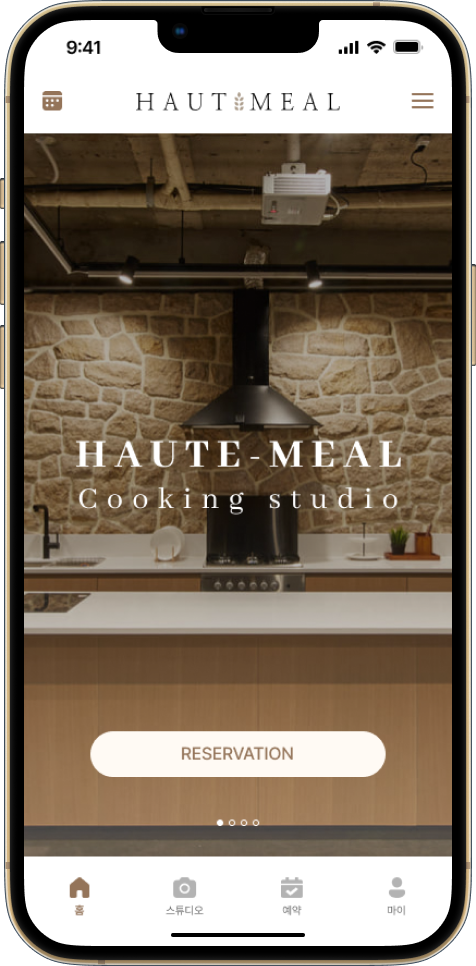
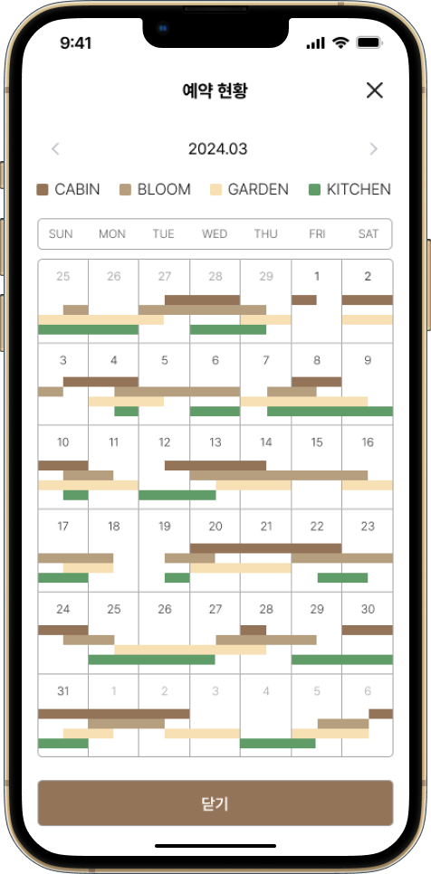
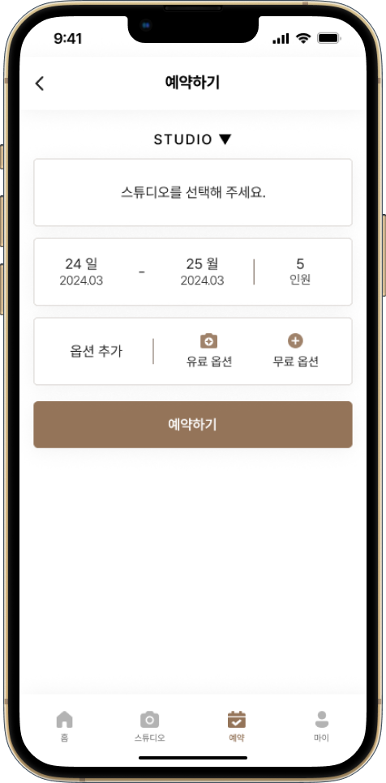
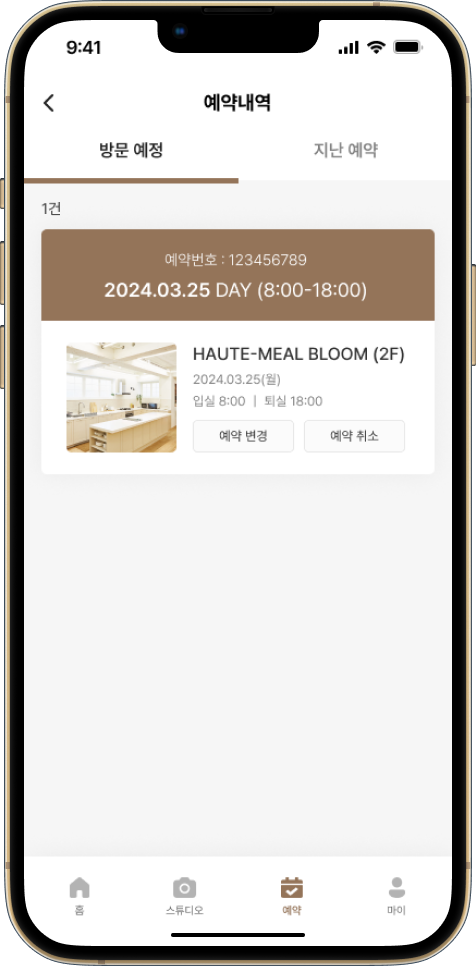
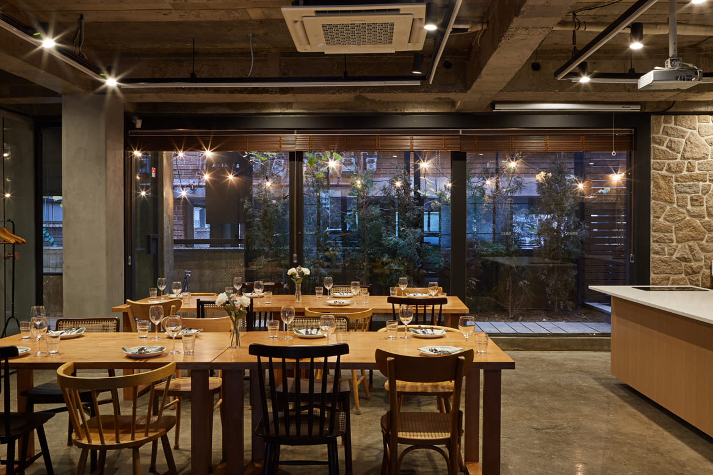

GitHub
GitHub E-MAIL
E-MAILHAUT-MEAL STUDIO
- 24/03/19 - 24/04/05
- 팀 프로젝트(3인)
- 모바일 UX/UI 리디자인




“창작자를 위한 모두의 주방,
예약까지 똑똑하게!”
오트밀 스튜디오는 푸드 및 쿠킹 콘텐츠 제작을 위한 공간을 대여하는 업체입니다.사용자 편의성을 고려해 기존 모바일 웹을 개선하고, 자체 예약 시스템을 도입한 앱 형태로 UI를 새롭게 디자인했습니다.
Goals
사용자 편의성과 예약 시스템을 이해하고
문제점을 인식, 개선한 앱을 디자인할 수 있다.
-
역할
팀 리더, 발표자
-
담당 업무
- 리서치
- 와이어프레임, 프로토타입 제작
- BI 분석/기획 및 리디자인
- 발표자료 제작 및 발표
-
-
발표자료 보러 가기
PRESENTATION -
완료보고서 보러 가기
PROJECT REPORT
-
-
진행 과정
- 리디자인 사이트 선정
- 사이트 분석
- 경쟁사 분석
- UI 비전 설정
- 문제점&개선 방안 작성
- 페르소나 설정
- 사용자 시나리오 작성
- 정보구조도 제작
- 와이어프레임 제작, 워크플로우 설계
- 프로토타입 제작
- 발표 및 피드백
- 수정, 완료보고서 작성
Overview
Result
GOOD
- 기존의 콘텐츠를 가독성 높게 구성함
- 예약 시스템을 도입하여 사용자 편의성 향상
- Figma 팀 프로젝트를 활용한 실시간 작업
- 팀원 간의 의견 존중, 적극적인 아이디어 공유
BAD
- 다양한 유형의 BI 디자인을 제작하지 못함
- 예약 페이지 내 옵션 선택하는 과정을 보다 명료하게 개선해야 할 필요가 있음
- 규모가 작은 웹을 선정하여 관련 정보가 부족함
REVIEW
사용자 편의성이 고려되지 않은 ‘오트밀 스튜디오’ 모바일 웹의 문제점을 분석/개선하고, 예약 시스템을 반영하여 어플 형태로 UI 디자인했습니다. 머릿속에 떠오르는 구조와 디자인을 시각적으로 구현하는 일이 어려웠지만 와이어프레임과 워크플로우를 설계하며 구체화 해 나갔습니다. 메뉴 등의 요소를 최대한 간소화해야 사용자 친화적인 UX/UI 디자인이 탄생하며, 빠른 의사 결정으로 이어질 수 있다는 점을 배웠습니다.
첫 작업이기에 스스로 아쉬웠던 점이 있었지만 팀원들과 문제를 해결해가며 화기애애하게 프로젝트를 마무리했다는 점에서 만족스럽습니다.
